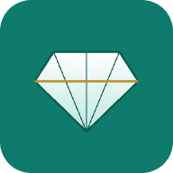

💎 מעקב אבני חן
בחר איך לפתוח את האפליקציה:
▶️ פתח את האפליקציה (מומלץ)
⬇️ הורד למחשב (עובד גם בלי אינטרנט)
טיפ: אם אתה פותח אונליין (הכפתור הירוק) – הוסף את הדף למועדפים (Ctrl+D).
ככה תמיד תקבל את הגרסה העדכנית, והנתונים שלך נשמרים אוטומטית באותו מקום.
אפשר גם "להתקין" את האפליקציה: ב‑Chrome/Edge יופיע סמל התקנה בשורת הכתובת.
מעבר בין מחשבים או גיבוי? בתוך האפליקציה: 💾 גיבוי הכל / ↺ שחזור גיבוי,
או חיבור קובץ ב‑OneDrive/Drive דרך 🔗 חבר קובץ נתונים.